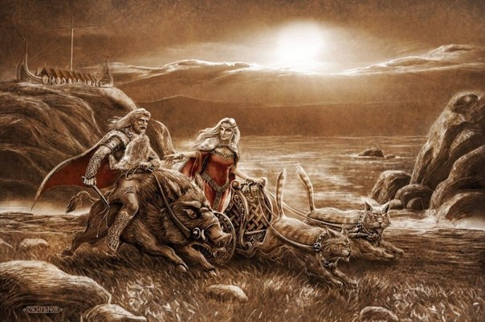
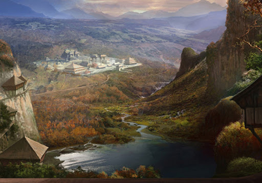

Боги Ванахейма
Ваны обитают в своей стране — Ванахейме, которая, согласно Саге об Инглингах, располагалась в Северном Причерноморье к западу от реки Ванаквисль (Дон). Список ванов: Ньёрд, Фрейр, Фрейя, Гулльвейг.
Согласно Саге об Инглингах (XIII век) Ванахейм располагался на берегах Черного моря (исл. Svartahaf) в Сарматии (Северное Причерноморье) в районе устья Танаиса, который также именовался Ванаквисль (исл. Vanakvísl). Хотя река Дон не берет свое начало в горах, а Сага четко указывает, что «С севера, с гор, что за пределами заселенных мест, течет по Скифии эта река».
Земли в Азии к востоку от реки Танаквисль называли Асаланд, или Асахейм, а главный город в стране назывался Асгард. Между двумя странами происходили войны и обмены пленниками. Другими странами, соседними с Ванахеймом, но также лежащими к западу от Асгарда названы в сагах Страна Саксов (исл. Saxland, Древняя Германия) и Гардарики (Новгородская земля). Таким образом, Ванахейм географически совпадает с описаниями Сарматии (согласно Географии Птолемея, II век), однако характеризует более позднее время, когда на смену сарматам пришли славяне-венеды, которые стали восприниматься как автохтоны данной территории. По одной из версий Ванахейм локализован в Керченском проливе.
